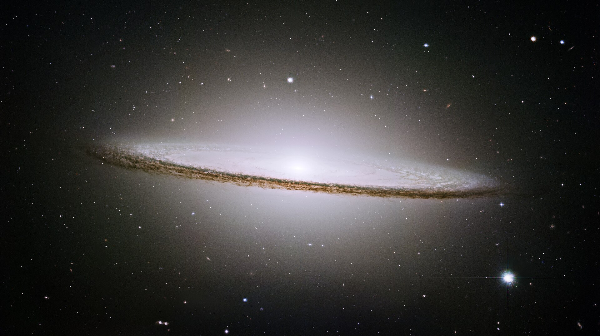

Galaksije se med seboj razlikujejo po:
- obliki,
- velikosti,
- količini plina in prahu,
- številu zvezd,
- hitrosti nastajanja novih zvezd.
Delimo jih na glavnih per skupin.

Za spiralne galaksije je značilna ploščata oblika, aktivno nastajanje zvezd, veliko medzvezdnega plina in dobro vidni spiralni kraki. Spiralni kraki niso trdni deli galaksije, ampak območja z večjo gostoto snovi, skozi katera se zvezde premikajo. V spiralnih krakih nastajajo nove zvezde, zato so tam pogosto prisotne modre mlade zvezde.

Lečaste galaksije predstavljajo prehod med spiralnimi in eliptičnimi galaksijami. Imajo osrednji disk, vendar nimajo izrazitih spiralnih krakov. V njih je malo plina in manj nastajanja novih zvezd.

Eliptične galaksije imajo ovalno ali kroglasto obliko. Nimajo spiralnih krakov in vsebujejo zelo malo plina ter prahu. V njih prevladujejo starejše zvezde, zato so pogosto rumenkaste ali rdečkaste barve. Te galaksije spadajo tako med najmanjše galaksije, kot tudi med največje velikanke v vesolju. Njihovi premeri lahko sega od nekaj tisoč pa vse do nekaj več kot milijon svetlobnih let. Dogajanje v njihovi notranjosti pa je precej počasnejše. Mnoge eliptične galaksije nastanejo po trkih spiralnih galaksij.

Nepravilne galaksije nimajo določene oblike. Pogosto so posledica gravitacijskih motenj ali trkov z drugimi galaksijami. Vsebujejo veliko plina, veliko prahu in veliko mladih zvezd.

Pritlikave galaksije so zelo majhne galaksije z manj zvezdami. Pogosto krožijo okoli večjih galaksij. Čeprav so majhne, jih je v vesolju zelo veliko.